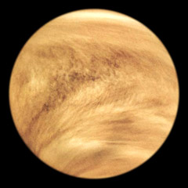

Welcome to the Solar System
VENUS

Venus is a dim world of intense heat and volcanic activity. Similar in structure and size to Earth, Venus' thick, toxic atmosphere traps heat in a runaway 'greenhouse effect.' The scorched world has temperatures hot enough to melt lead. Glimpses below the clouds reveal volcanoes and deformed mountains. Venus spins slowly in the opposite direction of most planets.
10 Need-to-Know Things About the Venus:
- Venus is only a little smaller than Earth.
- Venus is the second closest planet to the sun at a distance of about 108 million km (67 million miles) or 0.72 AU.
- One day on Venus lasts as long as 243 Earth days (the time it takes for Venus to rotate or spin once). Venus makes a complete orbit around the sun (a year in Venusian time) in 225 Earth days.
- Venus is a rocky planet, also known as a terrestrial planet. Venus' solid surface is a cratered and volcanic landscape.
- Venus' thick and toxic atmosphere is made up mostly of carbon dioxide (CO2) and nitrogen (N2), with clouds of sulfuric acid (H2SO4) droplets.
- Venus has no moons.
- There are no rings around Venus.
- More than 40 spacecraft have explored Venus. The Magellan mission in the early 1990s mapped 98 percent of the planet's surface.
- No evidence for life has been found on Venus. The planet's extreme high temperatures of almost 480 degrees Celsius (900 degrees Fahrenheit) make it seem an unlikely place for for life as we know it.
- Venus spins backwards (retrograde rotation) when compared to the other planets. This means that the sun rises in the west and sets in the east on Venus.